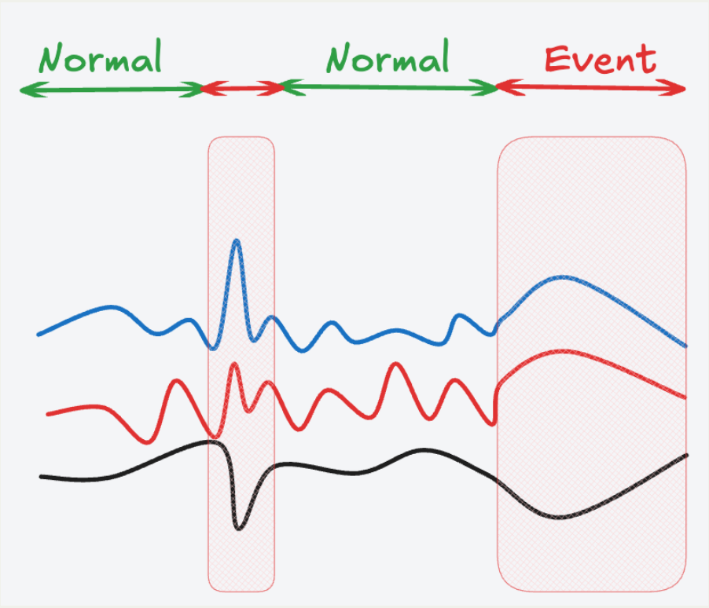
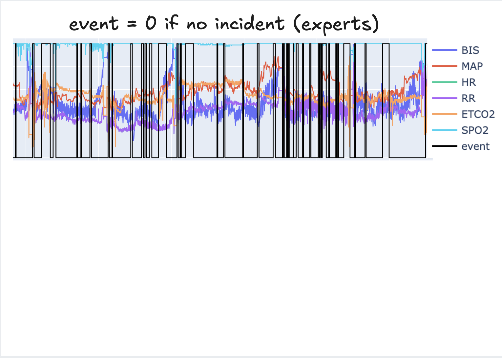
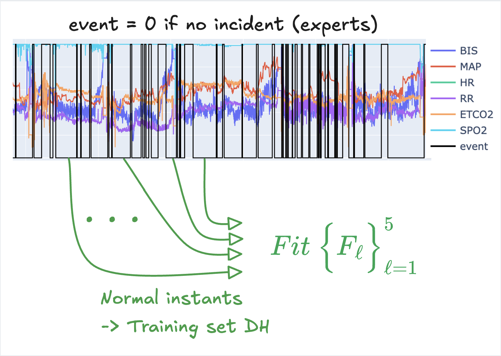
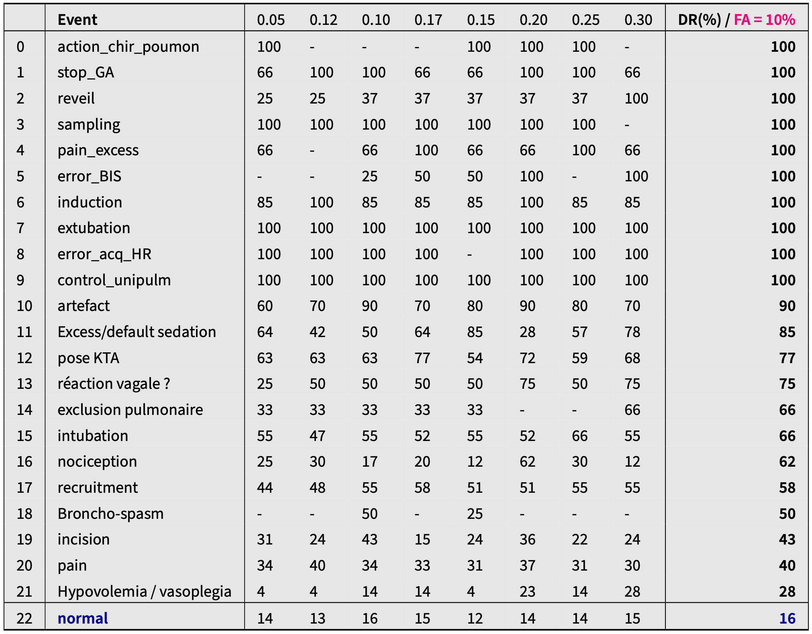

Piece-wise polynomial invariants
Usin pwpol to characterize normality in anaesthesia-related sensors
1 Objective
In this section, it is shown how the identification of multivariate piece-wise polynomial invariants involving a set of sensors might be used to characterize the normality and hence help detecting abnormal events during intervention in the operation room.
The dataset used in this work is a subset of the well known \(\texttt{vitalDB}\) dataset Lee et al. (2022)

The objective behind establishing invariant relationships can be stated as follows:
Use some recorded sensors’ measurements under normal conditions in order to:
- Characterize normality
- Use the characterization to
- detect events (anomalies) or
- derive an automatic annotation tool.

Obviously, these goal can be progressively achieved by iterations between the algorithm and experts annotating/correcting the early labelling by the automatic tool. This is sketched in the following scheme:

As the roadmap needs several iterations and these require a long term committment from practicionners. The entire process has not yet been undertaken. Only the first two steps of the above described cycle have been implemented.
Consequently, the methods and the results discussed in this section can only be viewed as a sort of proof of concept and a roadmap rather than a ready-to-use tool.
2 The Dataset
We work on a dataset involving 19 patients having different kinds of surgeries. The sensors represented in the dataset are linked to the anaesthesia monitoring. More precisely, the following measurement sensors are involved:
- BIS
- Bi-Spectral Index (EEG measurements interpreted),
- MAP
- Mean Arterial Pressure,
- HR
- Heart Rate,
- RR
- Respiration Rate (RR),
- ETCO2
- End-Tidal Carbon Dioxide (ETCO2).
Nevertheless, it is worth amphasizing that the methodology is perfetcly generic and might be successfully applied to any extended set of sensors1 (and not necessarily those linked to anaesthesia).
3 The priniciple
The principle of the method is sketched on the set of tabs below. Notice in particular the central role played by the identification of piece-wise polynomial relationships which is the precise task assigned to the pwpol module.



Based on the Big Picture explained in the figures above, let us focus on the identification task and evaluate the ability of the pwpol module to capture tight invariant relationships linking the available sensors information in spite of the variety of patients, operations and anaesthesiologists involved.
4 Characteristics of identified models
The table below shows the characteristics of of the piece-wise polynomial invariant relationships for different targeted sensors:
\[ \texttt{BIS}, \texttt{MAP}, \texttt{HR}, \texttt{RR}, \texttt{ETCO2} \] and different precision thresholds: \[ \texttt{th}\in \{0.02, 0.05, 0.1, 0.15, 0.2, 0.3\} \]
These models have been identified on the first \(25\%\) of the patients (this corresponds to a patient-based split between train and test datasets).
Notice that in spite of the complex nature of the relationships, the number of monomials that is needed to capture the invariant relationship with high precision2 is rather moderate if not quite small and the computation time never exceeds half a minute.
5 Visualizing some residuals
6 Event detection results
The previously defined normality characterization might be used to fire alarms in the operation rooms. The following figures show the resulting events detection statistics for different levels of acceptable false alarm rates.
Notice that there are different columns corresponding each to a level of precision so that each one can be used alone to fire alarm signals. The threshold used for each individual worker is the one written in purple at the top right corners of each table.
The last column corresponds to the case where an alarm is raised as soon as one of the workers fires an alarm.
The effective false alarm is the one associated to the last row in the tables. This differs from the previously mentioned one (in purple) which is used by each worker to fire the alarm.
The events-related intervals have been annotated by doctors from the CHU-Grenoble on the recordings of 19 patients.
